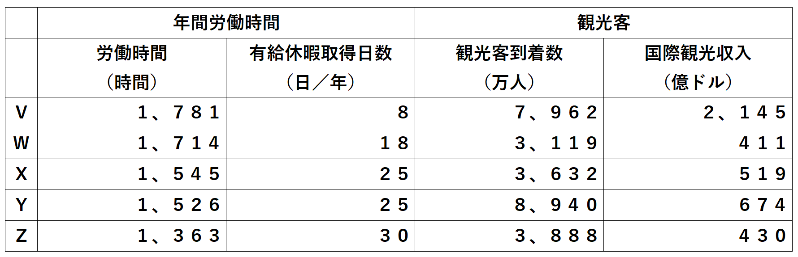

本日の内容に関するクイズとなっています。(^_^)
選択肢の中から選んで「回答する」を押してください。全8問です。
※横画面推奨です。
Q1.睡眠にはレム睡眠とノンレム睡眠の二種類があると言われています。レム睡眠の特徴とは？
- A. 脳が休息している
- B. 夢をよく見る
- C. 人間にはみられない
Q2.長時間労働では、きょ血性心疾患や脳血管疾患などに罹りやすくなるといわれている。「きょ」の漢字として適するものは？
- D. 虞
- E. 虚
- F. 虜
Q3.生活習慣病として適していないものはどれか？
- G. 糖尿病
- H. 慢性腎不全
- I. 骨折
Q4.生活習慣病にかかりやすい理由として睡眠時間が短いことが挙げられる。その理由とは？
- J. ラ・ヨダソウ・スティアーナ現象がおこり、脳に異常が生じるから。
- K. 血糖値の変動が小さくなり、神経系の乱れが生じるから。
- L. 睡眠不足だと、ホルモンの作用で食事摂取量が増えるから。
Q5.不眠症の説明として適していないものはどれか？
- M. 早朝に目が覚めて困る。
- N. 睡眠時間が4時間未満の日が1週間のうち4日以上で認められる。
- O. うつ病の患者に高頻度で認められる。
Q6.睡眠時間の特徴として秋から冬にかけて長くなることが挙げられる。正しい文はどれ？
- P. 寒くなり体が回復しにくいから。
- Q. 空気が乾燥し、水分が失われやすいから。
- R. 日照時間が少ないうえに、光量も少ないから。
Q7.国が公表している「健康づくりのための睡眠指針」に関する問題である。適していないものはどれか？
- S. 2016年に厚労省が策定した。
- T. 「眠くなってから寝床に入る」との記載がある。
- U. 「若年世代は夜更かしを避ける」との記載がある。
Q8.労働時間が増加すると睡眠時間などが短くなる。そこで、労働基準法で長時間労働の防止や、有給休暇取得を推奨している。下表は、主な国の就業者1人当たり年間労働時間と観光者到着数等に関する統計(いずれも2018年)である。次のうち日本にあてはまるものはどれか？

- V
- W
- X
- Y
- Z